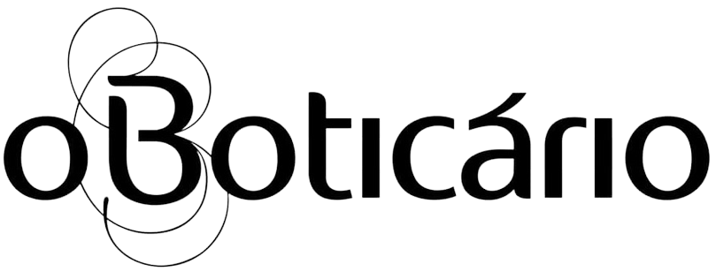

A lapa é famosa pela grande concentração comercial, principalmente localizada na rua 12 de outubro e seus arredores, tendo muitas lojas de roupas, itens para cozinha, eletrodomésticos, óticas, cosméticos, artigos de esportes, papelaria, farmácia, aviamento, decorações, fantasias, restaurantes, hotéis, produtos exotéricos, sebo, clínicas de estética, odontologia, lojas de artigos místicos, religiosos, bancos e muito mais
Além das lojas alocadas na 12 de outubro, também temos o conhecido mercadão da lapa.
O mercadão está muito mais estruturado e moderno, conta com muitas lojas. O consumidor encontra produtos como: bebidas, queijos e vinhos de diversas procedências, tabacaria, ervas medicinais, temperos e especiarias, iguarias, conservas, pescados, frutos do mar, embutidos, carnes exóticas e carnes com cortes especiais. Além também de produtos de decoração, utensílios domésticos, produtos de limpeza, armarinhos, presentes, entre outros.
Fique à vontade para conferir o site do Mercado da Lapa
E dentre as lojas coladas na rua temos algumas que se destacam entre outras, elas são:
Localizada no endereço: R. Doze de Outubro, 194/198,a loja de artigos diversos é muito popular dentre o comércio graças a sua grande variedade de itens e preços acessíveis em um só lugar, atraindo muitos clientes. Sempre com movimentada com muitos compradores, a rede de lojas tem várias filiais espalhadas pela cidade. Entre no site da empresa para conferir agora mesmo!

Não muito longe da armarinhos Fernando e da 12 de outubro é fácil encontrar uma das lojas Sumirê na rua. Clemente Álvares, 75. Lá pode-se comprar todo tipo de produtos de beleza, cosméticos e cuidado pessoal. Para saber mais entre no site da empresa!
" alt="Logo oBoticário">
Uma das perfumarias mais famosas tem suas lojas instaladas na doze de outubro também, e em dois lugares diferentes! A oboticário oferece o mais variado catálogo de produtos com diferentes fragrâncias para todos os gostos e preferência, para se surpreender com os aromas e ótimo atendimento visite-a em qualquer uma de suas duas localizações: R. Doze de Outubro, 559; R. Doze de Outubro, 222.
Se quiser uma palinha de tudo que a perfumaria lhe reserva e para conhecer outros endereços entre no site da Oboticário

Em meio a essa grande variedade de comércios, as lojas Marisa não podiam estar de fora, a loja de roupas é popular por seu variado estilo de roupas e acessórios, desde a casacos, bolsas, colares, sapatos, blusas para todas as ocasiões. Para saber mais e consultar as peças da loja confira o site!
Também é possível localizar facilmente a loja de departamento Rota 99 na R. Doze de Outubro, 563, tendo grande variedade de produtos, funcionários prestativos e educados, valores bem acessíveis e ótima localização. Fique sempre atualizado(a) das novidades seguindo o instagram da Rota 99!
A loja Casa Miranda, loja de artigos doméstico, vende os mais uteis itens para sua casa, especialmente cozinha, desde potes, a garfos, pratos, copos, e muito mais! Tudo podendo ser encontrado na R. Antônio Raposo, 12. Confira aqui o site
Além de tudo isso e muitas outras lojas a grande Magalu também está em dois endereços da rua! A empresa do setor do varejo multicanal permite a realização de compras na loja, no site/app e entrega ou retiro de compras. Pode encontrá-la na R. Doze de Outubro, 357 e também na R. Doze de Outubro, 357. Conheça o site!